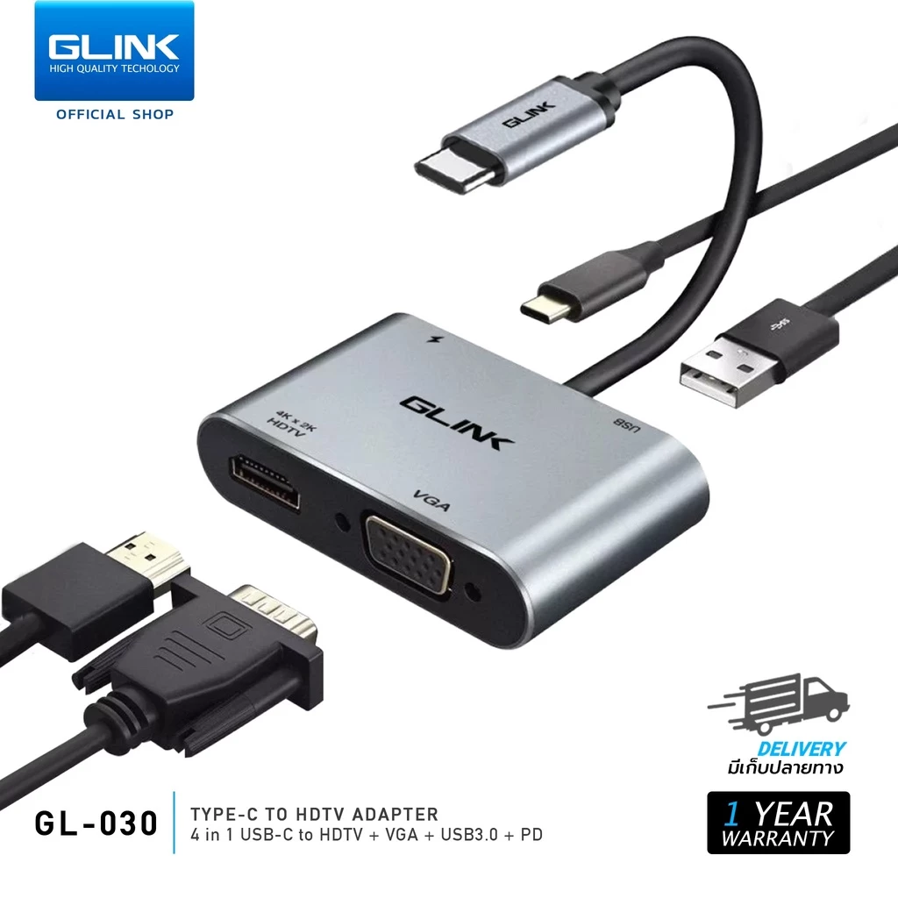

1GLINK GL030 4-in-1 Hub Type-C to HDMI / VGA
ราคา Shopee: 307 บาท
ถูกที่สุดในกลุ่ม ได้ทั้ง HDMI และ VGA ในตัวเดียว เหมาะกับคนที่ต้องการต่อจอภาพเพิ่มโดยไม่ต้องการพอร์ตเยอะ ซื้อมาใช้เสียบจอแล้ว เพิ่ม USB 2-3 ตัวก็พอ
- พอร์ตHDMI + VGA + USB-A x2
- ความละเอียด HDMI4K
- PD Chargingไม่มี
- ขนาดพกพาได้
ข้อดี
- ราคาถูกที่สุด ไม่ถึง 310 บาท
- มีทั้ง HDMI และ VGA ในตัวเดียว
- เล็กพกพาสะดวก
ข้อเสีย
- ไม่มี PD Charging ชาร์จ Notebook ไม่ได้
- พอร์ตน้อย ถ้าต้องการเพิ่มเติมอาจไม่พอ
- USB-A เป็น 2.0 ความเร็วต่ำ
เหมาะสำหรับ: คนต้องการต่อจอเพิ่มอย่างเดียว ไม่ต้องการ feature เพิ่มเติม งบต่ำกว่า 350 บาท
ดูราคาล่าสุดบน Shopee →